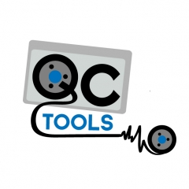

How Open Source Audiovisual Tools Help Archivists (And You Too!)
hi!
Why?
Projects on amiaopensource
vrecord

microservices suites
resource lists
analog-inspection, open-workflows, time-based-media-art
Tools that evolved out of existing open source frameworks

qcli and QCTParse

IETF CELLAR
archivists contributing to OSS
conclusion!